四
高级半监督分类
在本章中，我们将介绍更高级的半监督分类算法，这些算法能够解决简单算法无法解决的复杂问题。特别是，我们将讨论:
- 对比悲观似然估计 ( CPLE )
- 半监督支持向量机 ( S3VM )
- 直推式支持向量机 ( TSVM )
对于这些算法中的每一个，我们将解释它们背后的理论，然后展示它们在实践中的Python代码示例。我们将从CPLE算法开始。
对比悲观似然估计
正如我们在前面的章节中讨论的，在许多现实问题中，检索未标记的样本比正确标记的样本更便宜。出于这个原因，许多研究人员一直致力于寻找执行半监督分类的最佳策略，这种半监督分类可能优于监督分类。其思想是用少量标记样本训练分类器，然后在添加加权的未标记样本后提高其精度。最好的结果之一是由Loog提出的CPLE算法(在Loog M .，半监督分类的对比悲观似然估计，arXiv:1503.00269，2015)。
在我们解释这个算法之前，有必要定义一下普拉特标度。如果我们有一个带标签的数据集( X ， Y )，包含 N 个样本，那么可以定义一个一般估计量的对数似然成本函数，如下所示:
在训练模型之后，应该可以确定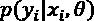，这是给定样本的标签的概率xT29】I。然而，一些分类器并不基于这种方法(如SVM)，而是评估正确的类别，例如，通过检查参数化函数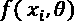的符号。由于CPLE是一个通用框架，当概率不可用时，它可以与任何分类算法一起使用，因此实现一种称为普拉特缩放的技术是有用的，这种技术允许我们通过参数化的sigmoid将决策函数转换为概率。对于二元分类器，它可以表示如下:
 和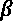是为了最大化可能性而必须学习的参数。幸运的是，scikit-learn提供了方法
和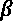是为了最大化可能性而必须学习的参数。幸运的是，scikit-learn提供了方法predict_proba()，它返回所有类的概率。普拉特缩放是自动或按需执行的；例如，SCV分类器需要参数probability=True来计算概率映射。我总是建议在实现定制解决方案之前检查文档。
CPLE理论
考虑一个完整的数据集，由标记和未标记的样本组成。为了简单起见，我们可以重新组织原始数据集，使得第一个 N个样本被标记，而下一个 M个样本未被标记:
由于我们不知道所有 x u 样本的标签，我们可以决定使用在训练过程中可以优化的M k-维(k是类的数量)软标签qT51】I:
上式中的第二个条件是保证每个 q i 代表一个离散概率(所有元素之和必须为1.0)所必需的。因此，完整的对数似然成本函数可以表示如下:
第一项表示受监督部分的对数似然，而第二项负责未标记点。如果我们仅用标记样本训练分类器，排除第二个加数，我们得到一个参数集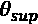。CPLE定义了对比条件(也作为对数似然)，通过定义半监督方法给出的总成本函数相对于监督解决方案的改进:
这允许我们强加一个条件，即半监督解必须优于监督解，事实上，使其最大化；我们增加第一项并减少第二项，从而获得CL的成比例增加(术语对比在机器学习中非常常见，它通常表示作为两个相反约束之间的差异而实现的条件)。如果CL没有增加，很可能意味着没有从pT10】数据中提取的边际分布 p(x) 中抽取未标记样本。
在前面的表达式中，我们隐含地使用了软标签，但是由于它们最初是随机选择的，并且没有基本事实来支持它们的价值，所以最好不要相信它们。我们通过强加一个悲观的条件(作为另一个对数似然)来做到这一点:
通过施加这个约束，我们试图找到最小化对比对数似然的软标签；这就是为什么这被定义为一种悲观的方法。这似乎是一个矛盾；然而，信任软标签可能是危险的，因为即使有很大百分比的错误分类，半监督对数可能性也会增加。我们的目标是找到最佳参数集(从监督基线开始保证最高精度的参数集，该参数集已使用标记样本获得)并改进它，同时不忘记标记样本提供的结构特征。
因此，我们的最终目标可以表述如下:
此时，我们可以创建一个完整的Python示例来展示该算法的实际能力。
对比悲观似然估计示例
我们将使用从MNIST数据集中提取的子集，用Python实现 CPLE算法。为简单起见，我们将只使用代表数字0和1的样本:
from sklearn.datasets import load_digits import numpy as np X_a, Y_a = load_digits(return_X_y=True) X = np.vstack((X_a[Y_a == 0], X_a[Y_a == 1])) Y = np.vstack((np.expand_dims(Y_a, axis=1)[Y_a==0], np.expand_dims(Y_a, axis=1)[Y_a==1])) nb_samples = X.shape[0] nb_dimensions = X.shape[1] nb_unlabeled = 150 Y_true = np.zeros((nb_unlabeled,)) unlabeled_idx = np.random.choice(np.arange(0, nb_samples, 1), replace=False, size=nb_unlabeled) Y_true = Y[unlabeled_idx].copy() Y[unlabeled_idx] = -1
在创建包含360个样本的受限数据集( X ， Y )后，我们随机选择150个样本(约42%)成为未标记的(对应的 y 为-1)。在这一点上，我们可以测量仅在标记数据集上训练的逻辑回归的性能:
from sklearn.linear_model import LogisticRegression lr_test = LogisticRegression(solver="lbfgs", max_iter=10000, multi_class="auto", n_jobs=-1,(), random_state=1000) lr_test.fit(X[Y.squeeze() != -1], Y[Y.squeeze() != -1].squeeze()) unlabeled_score = lr_test.score(X[Y.squeeze() == -1], Y_true) print(unlabeled_score)
输出是:
0.573333333333
因此，逻辑回归显示出对未标记样本的分类的57%的准确性。我们还可以评估整个数据集的交叉验证分数(在移除一些随机标签之前):
from sklearn.model_selection import cross_val_score total_cv_scores = cross_val_score(LogisticRegression(solver="lbfgs", max_iter=10000, multi_class="auto", random_state=1000), X, Y.squeeze(), cv=10, n_jobs=-1) print(total_cv_scores)
前面代码片段的输出是:
[0.41666667 0.58333333 0.63888889 0.19444444 0.44444444 0.27777778 0.44444444 0.38888889 0.5 0.41666667]
因此，如果所有标签都是已知的，当使用10次折叠(每个测试集包含36个样本)时，分类器实现了平均43%的准确度。
我们现在可以实现一个CPLE算法。第一件事是初始化一个LogisticRegression实例和软标签:
lr = LogisticRegression(solver="lbfgs", max_iter=10000, multi_class="auto", random_state=1000) q0 = np.random.uniform(0, 1, size=nb_unlabeled)
q0是一个有界在半开区间(0，1)的值的随机数组，因此，我们还需要一个转换器将qT25】I转换成一个实际的二进制标签:
我们可以使用NumPy函数np.vectorize()来实现这一点，它允许我们对一个矢量的所有元素进行变换:
trh = np.vectorize(lambda x: 0.0 if x < 0.5 else 1.0)
为了计算对数似然，我们还需要一个加权对数损失(类似于scikit-learn函数log_loss()，然而，它计算负对数似然，但不支持权重):
def weighted_log_loss(yt, p, w=None, eps=1e-15):
if w is None:
w_t = np.ones((yt.shape[0], 2))
else:
w_t = np.vstack((w, 1.0 - w)).T
Y_t = np.vstack((1.0 - yt.squeeze(), yt.squeeze())).T
L_t = np.sum(w_t * Y_t * np.log(np.clip(p, eps, 1.0 - eps)), axis=1)
return np.mean(L_t)
此函数计算以下表达式:
我们还需要一个函数来构建带有可变软标签的数据集qT30】I:
def build_dataset(q):
Y_unlabeled = trh(q)
X_n = np.zeros((nb_samples, nb_dimensions))
X_n[0:nb_samples - nb_unlabeled] = X[Y.squeeze()!=-1]
X_n[nb_samples - nb_unlabeled:] = X[Y.squeeze()==-1]
Y_n = np.zeros((nb_samples, 1))
Y_n[0:nb_samples - nb_unlabeled] = Y[Y.squeeze()!=-1]
Y_n[nb_samples - nb_unlabeled:] = np.expand_dims(Y_unlabeled, axis=1)
return X_n, Y_n
此时，我们可以定义对比对数似然性:
def log_likelihood(q):
X_n, Y_n = build_dataset(q)
Y_soft = trh(q)
lr.fit(X_n, Y_n.squeeze())
p_sup = lr.predict_proba(X[Y.squeeze() != -1])
p_semi = lr.predict_proba(X[Y.squeeze() == -1])
l_sup = weighted_log_loss(Y[Y.squeeze() != -1], p_sup)
l_semi = weighted_log_loss(Y_soft, p_semi, q)
return l_semi - l_sup
这个方法将被优化器调用，每次传递不同的 q 向量。第一步是建立新的数据集并计算Y_soft，这是对应于 q 的标签。然后，用数据集训练逻辑回归分类器(因为Y_n是一个( k，1 )数组，所以有必要对其进行压缩以避免警告；当使用 Y 作为布尔指示器时，也是如此。此时，可以使用方法predict_proba()计算 p sup 和 p sem ，最后，我们可以计算半监督和监督对数损失，这是一个函数 q i ，它是我们想要最小化的项，而最大化 是在训练逻辑回归时隐式完成的。
是在训练逻辑回归时隐式完成的。
使用在SciPy中实现的Broyden–Fletcher–Goldfarb–Shanno(BFGS)算法进行优化:
from scipy.optimize import fmin_bfgs q_end = fmin_bfgs(f=log_likelihood, x0=q0, maxiter=1000, disp=False)
这是一个非常快速的算法，但是鼓励用户用方法或库进行实验。在这种情况下，我们需要的两个参数是f，它是最小化的函数，以及x0，它是自变量的初始条件。Maxiter有助于在没有实现改进时避免过多的迭代次数(考虑到问题的非凸性，这可能非常频繁)。一旦优化完成，q_end包含最佳软标签。因此，我们可以重建数据集:
X_n, Y_n = build_dataset(q_end)
有了这个最终配置，我们可以重新训练逻辑回归并检查交叉验证的准确性:
final_semi_cv_scores = cross_val_score(
LogisticRegression(solver="lbfgs", max_iter=10000, multi_class="auto", random_state=1000),
X_n, Y_n.squeeze(), cv=10, n_jobs=-1)
print(final_semi_cv_scores)
CPLE交叉验证的结果是:
[0.97297297 0.86486486 0.94594595 0.86486486 0.89189189 0.88571429 0.48571429 0.91428571 0.88571429 0.48571429]
基于CPLE算法的半监督解决方案实现了平均81%的准确率，如预期的那样，优于监督方法。
CPLE总结
CPLE能够以有限的计算成本胜过标准分类方法，由于优化函数对对数似然的重新评估，计算成本可能相对较大。然而，额外的复杂性在半监督学习中是一种正常情况，在这一点上，应该清楚什么时候这种成本是合理的，什么时候最好坚持使用更小的带标签的数据集。读者可以尝试使用不同分类器的其他示例，如SVM或决策树，并验证CPLE何时允许获得比其他监督算法更高的准确性。
半监督支持向量机
当我们在前一章讨论聚类假设时，我们也将低密度区域定义为边界，并将相应的问题定义为低密度分离。基于这一概念的常见监督分类器是支持向量机 ( SVM )，其目标是最大化样本必须所在的密集区域之间的距离。
S 3 VM理论
关于线性和基于核的支持向量机的完整描述，请参考Bonaccorso G .，机器学习算法，第二版，Packt Publishing，2018。然而，提醒自己具有松弛变量的线性SVM的基本模型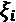是有用的:
这个模型是基于yT55】I可以是-1也可以是1的假设。松弛变量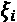或软余量是变量，每个样本一个，被引入以减少由原始条件( min ||w|| )施加的强度，其基于对错误侧的所有样本进行错误分类的硬余量。它们由铰链损耗定义，如下所示:
利用这些变量，如果一些点保持在由相应的松弛变量控制的距离内(在训练阶段也将其最小化，以避免不可控的增长)，则我们允许这些点克服限制而不被错误分类。在下面的图中，有这个过程的示意图:
线性SVM分类场景
每个高密度区域的最后元素是支持向量。在它们之间，有一个我们的分离超平面所在的低密度区域(在某些情况下也可以是零密度)。
在第一章、机器学习模型基础中，我们定义了经验风险的概念作为预期风险的代理；因此，我们可以将SVM问题转化为经验风险的最小化，在铰链成本函数下(在 w 上有或没有岭正则化):
理论上，总是由包含支持向量的两个超平面界定的每个函数都是好的分类器，但是我们需要最小化经验风险(以及预期风险)；因此，我们寻找高密度区域之间的最大余量。该模型可以分离两个边界不规则的密集区域；通过采用一个内核函数，它也可以在非线性场景中工作。在这一点上，当我们需要在半监督场景中解决这类问题时，自然的问题是关于整合标记和未标记样本的最佳策略。
首先要考虑的要素是比例:如果我们有一个低百分比的未标记点，问题主要是监督的，使用训练集学习到的泛化能力应该足以正确分类所有的未标记点。另一方面，如果未标记样本的数量大得多，我们返回到几乎纯粹的聚类场景(就像在关于生成性高斯混合的段落中讨论的场景)。这意味着，为了利用半监督方法在低密度分离问题中的优势，我们应该考虑标记/未标记比率约为1.0的情况。
然而，即使我们拥有一个类别的优势(例如，如果我们有一个巨大的未标记数据集和几个标记样本)，也总是有可能使用我们将要讨论的算法，即使它们的性能有时可能等于或低于纯监督/聚类解决方案。例如，当标记/未标记比率非常小时，转导SMV显示出更好的准确性，而其他方法可以以完全不同的方式表现。当使用半监督学习(及其假设)时，记住每个问题同时被监督和不被监督总是很重要的；最佳解决方案必须在每一个不同的背景下进行评估。
这个问题的解决方案由半监督SVM (也称为S3VM)算法提供。如果我们有 N 个标记样本和 M 个未标记样本，目标函数变成如下:
第一项施加了关于最大间距的标准SVM条件，而第二块被分成两部分:
- 我们需要添加 N 松弛变量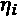来保证标记样本的软余量。
- 同时，我们必须考虑未标记的点，它们可以被归类为+1或-1。因此，我们有两个相应的松弛变量集合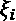和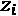。然而，我们希望为每个可能的对找到最小的变量，以确保未标记的样本被放置在达到最大准确度的子空间上。
解决这些问题所需的约束条件如下:
第一个约束限于标记点，这与监督SVM相同。相反，下面两个考虑了未标记样本可能被分类为+1或-1的可能性。举个例子，我们假设样本xT6】j的标号yj应该是+1，第二个不等式的第一个成员是正数 K (所以第三个等式对应的项是 -K )。很容易验证第一个slack变量是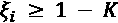，而第二个是zj≥1+K。因此，在目标中，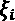被选择为最小化。
超参数 C 的选择应基于标准SVM所采用的相同标准。特别地，当 C → 0 时，支持向量的数量向最小值减少，而较大的值(例如 C=1 )意味着边界的灵活性增加。即使该模型在结构上是SVM，未标记样本的存在也会影响优化过程，例如，当 C 从0增加到1时，会产生非常不同的结果。
读者必须记住，该算法将试图找到未标记样本的最小松弛值，但由于没有指导标签，最终选择可能与问题不兼容。考虑到聚类和平滑假设，未标记的样本应该获得最近的相干密集区域的标记。通过改变 C 的值可以看出，这并不总是正确的，因为为了最小化松弛误差，算法可以分配一个标签在几何上与样本不兼容。
例如，离边界旁边的点最近的区域可能是具有固定标签的聚类。在这种情况下，我们希望这个点有相同的标签。
然而，如果通过分配不同的标签来最小化目标，则算法将做出不适当的决定，因为不尊重聚类假设没有惩罚。因此，作为一个通用规则，我们建议从一个较大的值开始(例如， C=1 )，并且只有在与一个类似的监督分类器比较了结果之后才减小它。在大多数情况下，当S 3 VM的性能度量(例如，AUC、F1分数或准确度)超过基准方法的相应度量时，可以通过几次迭代找到最佳值。
这种算法是归纳性的，通常产生良好的(如果不是极好的)性能。但是，它的计算成本非常高，应该使用优化的(本机)库来解决。不幸的是，这是一个非凸问题，没有封闭形式的求解方法；这也意味着优化可能达不到最佳配置。
现在让我们用Python实现一个S 3 VM并评估结果。
3虚拟机示例
我们现在将使用SciPy优化方法在Python中实现和S 3 VM，这些方法主要基于C和FORTRAN实现。读者可以尝试使用其他库，如NLOpt和LIBSVM，并比较结果。
NLopt是麻省理工学院开发的一个完整的优化库。它适用于不同的操作系统和编程语言。网址为https://nlopt . readthedocs . io。
LIBSVM是一个为解决SVM问题而优化的库，它与LIBLINEAR一起被scikit-learn采用。它也适用于不同的环境。首页是https://www.csie.ntu.edu.tw/~cjlin/libsvm/。
Bennet和Demiriz提出的一种可能性是对 w 使用L1范数，以便线性化目标函数；然而，这种选择似乎只对小数据集产生好的结果。我们将保持基于L2范数的原始公式，使用通过线性近似 ( COBYLA )算法的约束优化来优化目标。
让我们从创建一个二维数据集开始，包括标记样本和未标记样本(各占50%):
from sklearn.datasets import make_classification nb_samples = 100 nb_unlabeled = 50 X, Y = make_classification(n_samples=nb_samples, n_features=2, n_redundant=0, random_state=1000) Y[Y==0] = -1 Y[nb_samples - nb_unlabeled:nb_samples] = 0
为了简单起见(并且没有任何影响，因为样本是混洗的)，我们将最后50个样本设置为未标记的( y = 0 )。相应的曲线如下图所示:
原始标记和未标记数据集
空心圆代表未标记的点，它们分布在整个数据集中，而实心圆和三角形标记分别被分配给类0 ( y=-1 )和类1 ( y=1 )。此时，我们需要初始化优化问题所需的所有变量:
import numpy as np w = np.random.uniform(-0.1, 0.1, size=X.shape[1]) eta = np.random.uniform(0.0, 0.1, size=nb_samples - nb_unlabeled) xi = np.random.uniform(0.0, 0.1, size=nb_unlabeled) zi = np.random.uniform(0.0, 0.1, size=nb_unlabeled) b = np.random.uniform(-0.1, 0.1, size=1) C = 1.0 theta0 = np.hstack((w, eta, xi, zi, b))
由于优化算法需要单个数组，我们已经使用np.hstack()函数将所有向量堆叠到一个水平数组theta0中。我们还需要对min()函数进行矢量化，以便将其应用于数组:
vmin = np.vectorize(lambda x1, x2: x1 if x1 <= x2 else x2)
现在，我们可以定义目标函数:
def svm_target(theta, Xd, Yd):
wt = theta[0:2].reshape((Xd.shape[1], 1))
s_eta = np.sum(theta[2:2 + nb_samples - nb_unlabeled])
s_min_xi_zi = np.sum(vmin(theta[2 + nb_samples - nb_unlabeled:2 + nb_samples],
theta[2 + nb_samples:2
+ nb_samples + nb_unlabeled]))
return C * (s_eta + s_min_xi_zi) + 0.5 * np.dot(wt.T, wt)
参数是当前的theta向量，以及完整的数据集Xd和Yd。 w 的点积已经被乘以0.5，以保持用于监督SVM的传统符号。该常数可以被省略而没有任何影响。此时，我们需要定义所有的约束，因为它们是基于松弛变量的；每个函数(共享相同的目标参数)用一个指数idx来参数化。带标签的约束如下:
def labeled_constraint(theta, Xd, Yd, idx):
wt = theta[0:2].reshape((Xd.shape[1], 1))
c = Yd[idx] * (np.dot(Xd[idx], wt) + theta[-1]) + \
theta[2:2 + nb_samples - nb_unlabeled][idx] - 1.0
return (c >= 0)[0]
相反，未标记的约束如下:
def unlabeled_constraint_1(theta, Xd, idx):
wt = theta[0:2].reshape((Xd.shape[1], 1))
c = np.dot(Xd[idx], wt) - theta[-1] + \
theta[2 + nb_samples - nb_unlabeled:2 + nb_samples][idx - nb_samples + nb_unlabeled] - 1.0
return (c >= 0)[0]
def unlabeled_constraint_2(theta, Xd, idx):
wt = theta[0:2].reshape((Xd.shape[1], 1))
c = -(np.dot(Xd[idx], wt) - theta[-1]) + \
theta[2 + nb_samples:2 + nb_samples + nb_unlabeled ][idx - nb_samples + nb_unlabeled] - 1.0
return (c >= 0)[0]
它们用当前的theta向量、Xd数据集和idx索引来参数化。我们还需要包括每个松弛变量的约束( ≥ 0 ):
def eta_constraint(theta, idx):
return theta[2:2 + nb_samples - nb_unlabeled][idx] >= 0
def xi_constraint(theta, idx):
return theta[2 + nb_samples - nb_unlabeled:2 + nb_samples][idx - nb_samples + nb_unlabeled] >= 0
def zi_constraint(theta, idx):
return theta[2 + nb_samples:2 + nb_samples+nb_unlabeled ][idx - nb_samples + nb_unlabeled] >= 0
我们现在可以使用SciPy约定来设置问题:
svm_constraints = []
for i in range(nb_samples - nb_unlabeled):
svm_constraints.append({
'type': 'ineq',
'fun': labeled_constraint,
'args': (X, Y, i)
})
svm_constraints.append({
'type': 'ineq',
'fun': eta_constraint,
'args': (i,)
})
for i in range(nb_samples - nb_unlabeled, nb_samples):
svm_constraints.append({
'type': 'ineq',
'fun': unlabeled_constraint_1,
'args': (X, i)
})
svm_constraints.append({
'type': 'ineq',
'fun': unlabeled_constraint_2,
'args': (X, i)
})
svm_constraints.append({
'type': 'ineq',
'fun': xi_constraint,
'args': (i,)
})
svm_constraints.append({
'type': 'ineq',
'fun': zi_constraint,
'args': (i,)
})
每个约束由一个字典表示，其中type被设置为ineq表示它是一个不等式，fun指向可调用对象，args包含所有额外的参数(theta是主x变量，它是自动添加的)。使用SciPy，可以使用序列最小二乘编程 ( SLSQP )或线性近似约束优化 ( COBYLA )算法最小化目标。我们选择了后者，但是读者可以自由地使用任何其他方法或库。为了限制迭代次数，我们还设置了可选的字典参数'maxiter': 5000:
from scipy.optimize import minimize
result = minimize(fun=svm_target,
x0=theta0,
constraints=svm_constraints,
args=(X, Y),
method='COBYLA',
tol=0.0001,
options={'maxiter': 5000})
训练过程完成后，我们可以计算未标记点的标记:
theta_end = result['x'] w = theta_end[0:2] b = theta_end[-1] Xu= X[nb_samples - nb_unlabeled:nb_samples] yu = -np.sign(np.dot(Xu, w) + b)
在下图中，可以将初始图(左)与最终图进行比较，最终图中所有的点都被分配了一个标签(右):
原始数据集(左)。培训结果(右)
正如你所看到的，S 3 VM成功地为大多数未标记的点找到了正确的标签，并且它还相当抗虚假点引起的噪声。不幸的是，问题不是与最大精度的线性分离，最终配置倾向于惩罚对角线分隔线以下的1类样本(优势聚类是右上象限中的拉伸聚类)。然而，结果是有希望的，值得使用不同的超参数和优化算法进行进一步的研究(COBYLA倾向于停留在局部最小值)。我邀请读者继续进行这样的实验，以获得对这种方法的信心。
S 3 虚拟机摘要
虚拟机是一种非常强大的方法，它提供了高度的灵活性来适应不同的场景。当未标记样本的结构部分(甚至完全)未知，并且标记的主要责任必须授予已标记样本时，这种方法特别适用。
直推式支持向量机(TSVM)
由t .约阿希姆提出的直推式支持向量机 ( TSVM )提供了解决同一问题的另一种方法(在约阿希姆t .，使用支持向量机进行文本分类的直推式推理，ICML，第99/1999卷)。当未标记样本噪声不大，并且数据集的整体结构可信时，TSVM特别适用。TSVM的一个常见应用是对数据集进行分类，该数据集包含从相同的数据生成过程中提取的数据点(例如，使用相同仪器收集的医学照片),但由于经济等原因，这些数据点仅被部分标记。由于所有的图像都是可信的，TSVM可以利用数据集的结构来达到比监督分类器更高的精度。
TSVM理论
想法是用两组松弛变量保持原始目标——第一组用于标记样本，另一组用于未标记样本:
由于这是一种直推式方法，我们需要将未标记的样本视为变量标记的样本(服从于学习过程)，施加类似于监督点的约束。从某种角度来看，这相当于引入了关于最终分类的先验信念，强烈地基于聚类和平滑假设。
换句话说，TSVM比虚拟机更信任数据集的结构，数据科学家在行为选择上也更灵活。CT19】L和CT23】U的不同组合产生的结果可以从对标记点授予完全信任转变为相反的情况。正如介绍中所解释的，直推学习的目标只是对未标记的样本进行分类，同时利用已标记的样本和数据集的结构来做到这一点。然而，与归纳方法相反，标记样本施加的约束可以被削弱，以利于更具几何一致性的解决方案。
对于前面的算法，我们假设我们有 N 个标记样本和 M 个未标记样本；因此，条件变成如下:
第一个约束是经典的SVM约束，它只对标记样本有效。第二种方法使用变量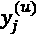和相应的松弛变量 对未标记的样本施加类似的条件，而第三种方法需要将标记约束为等于-1和1。
对未标记的样本施加类似的条件，而第三种方法需要将标记约束为等于-1和1。
就像半监督支持向量机一样，该算法是非凸的，尝试不同的方法来优化它是有用的。此外，作者在前述论文中展示了当测试集(未标记)较大而训练集(标记)相对较小时，TSVM如何优于标准监督SVM。另一方面，对于大的训练集和小的测试集，监督SVM(或其他算法)总是更可取的，因为它们更快并且产生更好的准确性。
我们现在可以创建一个完整的Python示例并评估结果。
TSVM的例子
在我们的Python实现中，我们将使用一个二维数据集，类似于前面方法中使用的那个。然而，在这种情况下，我们将在总共200个点中加入150个未标记的样本:
from sklearn.datasets import make_classification nb_samples = 200 nb_unlabeled = 150 X, Y = make_classification(n_samples=nb_samples, n_features=2, n_redundant=0, random_state=1000) Y[Y==0] = -1 Y[nb_samples - nb_unlabeled:nb_samples] = 0
相应的图如下图所示:
原始标记和未标记数据集
import numpy as np w = np.random.uniform(-0.1, 0.1, size=X.shape[1]) eta_labeled = np.random.uniform(0.0, 0.1, size=nb_samples - nb_unlabeled) eta_unlabeled = np.random.uniform(0.0, 0.1, size=nb_unlabeled) y_unlabeled = np.random.uniform(-1.0, 1.0, size=nb_unlabeled) b = np.random.uniform(-0.1, 0.1, size=1) C_labeled = 2.0 C_unlabeled = 0.1 theta0 = np.hstack((w, eta_labeled, eta_unlabeled, y_unlabeled, b))
在这种情况下，我们还需要为变量标签定义y_unlabeled向量。我还建议使用两个C常数(C_labeled和C_unlabeled)，以便能够对标记和未标记样本的错误分类进行不同的加权。我们对C_labeled使用了2.0的值，对C_unlabled使用了0.1的值，因为我们更希望接受带标签的样本的指导而不是未带标签的样本的结构。在另一个例子中，我们将把结果与相反的场景进行比较。
要优化的目标函数如下:
def svm_target(theta, Xd, Yd):
wt = theta[0:2].reshape((Xd.shape[1], 1))
s_eta_labeled = np.sum(theta[2:2 + nb_samples - nb_unlabeled])
s_eta_unlabeled = np.sum(theta[2 + nb_samples - nb_unlabeled:2 + nb_samples])
return (C_labeled * s_eta_labeled) + (C_unlabeled * s_eta_unlabeled) + (0.5 * np.dot(wt.T, wt))
而标记和未标记的约束如下:
def labeled_constraint(theta, Xd, Yd, idx):
wt = theta[0:2].reshape((Xd.shape[1], 1))
c = Yd[idx] * (np.dot(Xd[idx], wt) + theta[-1]) + \
theta[2:2 + nb_samples - nb_unlabeled][idx] - 1.0
return int((c >= 0)[0])
def unlabeled_constraint(theta, Xd, idx):
wt = theta[0:2].reshape((Xd.shape[1], 1))
c = theta[2 + nb_samples:2 + nb_samples + nb_unlabeled][idx - nb_samples + nb_unlabeled] * \
(np.dot(Xd[idx], wt) + theta[-1]) + \
theta[2 + nb_samples - nb_unlabeled:2 + nb_samples][idx - nb_samples + nb_unlabeled] - 1.0
return int((c >= 0)[0])
在这个例子中，我们想要使用SLSQP算法来优化目标。该方法计算所有约束(包括布尔约束)的雅可比矩阵(即包含一阶偏导数的矩阵)，在NumPy 1.8+中，布尔数组之间的差分运算符(-)已被弃用，必须替换为逻辑XOR。
不幸的是，这可能导致与SciPy不兼容；既然是这样，我们就把所有的布尔输出转换成整数值(0和1)。这种替换既不影响性能也不影响最终结果。此时，我们可以引入标记和未标记样本的约束条件:
def eta_labeled_constraint(theta, idx):
return int(theta[2:2 + nb_samples - nb_unlabeled][idx] >= 0)
def eta_unlabeled_constraint(theta, idx):
return int(theta[2 + nb_samples - nb_unlabeled:2 + nb_samples][idx - nb_samples + nb_unlabeled] >= 0)
svm_constraints = []
for i in range(nb_samples - nb_unlabeled):
svm_constraints.append({
'type': 'ineq',
'fun': labeled_constraint,
'args': (X, Y, i)
})
svm_constraints.append({
'type': 'ineq',
'fun': eta_labeled_constraint,
'args': (i,)
})
for i in range(nb_samples - nb_unlabeled, nb_samples):
svm_constraints.append({
'type': 'ineq',
'fun': unlabeled_constraint,
'args': (X, i)
})
svm_constraints.append({
'type': 'ineq',
'fun': eta_unlabeled_constraint,
'args': (i,)
})
定义完所有约束后，我们可以使用method='SLSQP'和字典选项'maxiter': 2000最小化目标函数。一般来说，收敛是在较少的迭代次数中实现的，但是这里我们做了一些假设，就好像我们在一个更一般的场景中工作一样:
from scipy.optimize import minimize
result = minimize(fun=svm_target,
x0=theta0,
constraints=svm_constraints,
args=(X, Y),
method='SLSQP',
tol=0.0001,
options={'maxiter': 2000})
print(result['message'])
前面代码片段的输出是:
Optimization terminated successfully.
这样的消息确认SLSQP成功找到最小值。我总是检查优化函数的输出，以确保在过程中没有出错，我建议您也这样做。特别是，当使用像COBYLA这样的方法时，重要的是所有的约束都是可微分的。当其中一些不正确时，算法会停止正常工作，因为雅可比矩阵的近似值变得不可靠。
当该过程完成时，我们可以计算未标记样品的标记并比较图:
theta_end = result['x'] w = theta_end[0:2] b = theta_end[-1] Xu= X[nb_samples - nb_unlabeled:nb_samples] yu = -np.sign(np.dot(Xu, w) + b)
下图显示了绘图对比:
原始数据集(左)。最终标记的数据集(右)
误分类(基于密度分布)略低于S 3 VM，因为我们已经决定更加信任标记样本。当然，可以改变 C 值和优化方法，直到达到预期结果。受监督的SVM提供了一个好的基准，当训练集足够大时(并且当它正确地表示整个数据时)，它可以有更好的性能。然而，考虑到原始数据集中的聚类，我们可以得出结论，TSVM达到了预期的结果。
特别地，如果我们考虑分离区域，我们可以观察到斜率的轻微修改将迫使位于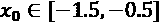的0类密集斑点至少部分地被分配给标签1。与S 3 VM相反，独立松弛变量集的存在增加了分离边界的平滑度，最终结果与非线性方法可获得的结果相似。
不同TSVM配置的分析
从标准的监督线性SVM开始，评估不同的 C 参数组合很有趣。数据集较小，包含大量未标记的样本:
nb_samples = 100 nb_unlabeled = 90 X, Y = make_classification(n_samples=nb_samples, n_features=2, n_redundant=0, random_state=100) Y[Y==0] = -1 Y[nb_samples - nb_unlabeled:nb_samples] = 0
我们使用scikit-learn提供的标准SVM实现(SVC()类)，它具有一个线性内核和C=1.0:
from sklearn.svm import SVC svc = SVC(kernel='linear', C=1.0) svc.fit(X[Y != 0], Y[Y != 0]) Xu_svc= X[nb_samples - nb_unlabeled:nb_samples] yu_svc = svc.predict(Xu_svc)
用标记样本训练SVM，向量yu_svc包含对未标记样本的预测。结果图(与原始数据集相比)如下图所示:
原始数据集(左)。C = 1.0的最终标记数据集(右)
所有标记的样本都用较大的正方形和圆形表示。结果符合我们的预期，但是有一个区域 (X [-1，0] - Y [-2，-1]) ，在这里SVM决定应用圆类(类0)，即使未标记的点接近正方形。考虑到聚类假设，这种假设可能并不总是可接受的。
事实上，在高密度区域中，存在属于两类的样本。使用具有CL= 1和CU= 10.0的TSVM可以获得类似的结果(读者可以很容易地将其作为练习来检查):

原始数据集(左)。C L = 1，C U = 10的最终标记数据集(右)
在这种情况下，我们相信带标签的样本能够确定最终结果。正如可能看到的，边界位置比SVM稍差。例如，区域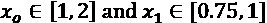中的1类点与一系列其他点对齐。我们可以将该结构视为一个非常长的blob(具有很强的方向内聚力)。标准的SVM决定用一条穿过中央空白区域的分隔线把它分成两个区域。考虑到整个数据集，这可能是最合理的选择。
另一方面，使用TSVM，我们赋予了标记样本更多的责任(也就是说，未标记的松弛变量可以有更大的变化，因此配置可以更容易地包括由标记样本施加的约束)，这样的选择导致算法降低分离线的斜率。结果，虽然类似于SVM的，有更多的集群一致性和两个类也更加平衡。请记住，在半监督场景中，我们没有任何关于类平衡的外部保证，它只能通过数据集的几何结构来获得。在我们的例子中，我们从一个平衡的数据集开始；然而，如果它是潜在不平衡的，TSVM为了实现这个目标所拥有的唯一资源是聚类和平滑假设。通过给予未标记样本更大的权重，我们隐含地实施了这个条件。换句话说，我们指示模型根据数据集的聚类结构找到最合适的标签，并最小化所有的突然转变。
现在让我们通过设置 C L =10 和CU= 0.1来尝试颠倒责任:
原始数据集(左)。C L = 10且C U = 0.1的最终标记数据集(右)
在这种情况下，标记的样本被允许利用更灵活的余量，而未标记的样本被限制到几乎硬的余量。分隔线现在是对角线，并且误分类误差比以前的配置更低或相当。然而，在这种情况下，我们可以充分认识到TSVMs的有效性。事实上，结果显示了更一致的几何分离。所有的聚类都是紧凑的，并且未标记样本的松弛变量保持较小，而标记样本被允许更加灵活。这一条件决定了使最终配置适应数据集几何结构的能力增强。
当然，读者可能想知道这两个结果哪一个是正确的。由于我们在半监督的情况下工作，要完全回答这个问题，有必要访问更大的标记数据集，这通常是不可能的。我的建议是在做出最终决定之前测试几种配置(在子采样数据集上)。无论何时，被标记的点必须是可信的，不仅因为它们已经被正确地预先分类，而且因为它们的位置是几何战略(例如，它们是特定人群的质心)，选择应该是挑选一个类似于标准SVM的配置。
相反，当数据集的结构更能代表基础数据生成过程时，TSVM可以赋予未标记样本更多的责任，并利用已标记样本来找到与密集区域的位置兼容的合理分类。最后，同样重要的是要记住，平滑度假设是基于突变非常罕见的想法。比较前面的两个例子，读者会注意到，在第二个配置中，分离边界比第一个稍微平滑一些。
事实上，虽然在第一种配置中存在至少两个突然的类别变化，并且所有的中心空白区域都服从相同的行为，但是第二种配置似乎以更灵活和更平滑的方式从一个类别过渡到另一个类别，只有突然的(不可避免的)分离。在这种情况下，我们可以得出结论，第二种配置更可取。
在Chapelle O .，schlkopf b .，Zien A .(编辑)，半监督学习，麻省理工学院出版社，2010年，有关于可能的优化策略的进一步细节，具有优点和缺点。如果读者对研究其他更复杂的问题和解决策略感兴趣，我邀请他们去看看这本书。
TSVM总结
TSVMs是强大的半监督模型，特别适用于数据集的几何结构可信并且所有点都来自相同的数据生成过程的情况。如果满足这些条件，该算法可以利用数据集的结构来为未标记的样本找到最合适的标记。另一方面，如果未标记的样本有噪声，或者其结构可能来自多个过程，TSVM不是一个合适的选择，可能会产生非常不准确的结果。
总结
本章中讨论的算法通常比前一章中分析的算法更强大，但它们有一些必须始终考虑的特定差异。CPLE和S 3 VM是归纳法。
CPLE是一个基于统计学习概念的归纳半监督分类框架，可以与任何监督分类器一起使用。主要概念是定义基于软标签的对比对数似然，该软标签考虑了标记和未标记样本。赋予后者的重要性取决于对数似然的最大化，因此该算法不太适合需要精细控制的任务。
S 3 VM算法提供了另一种归纳分类方法，它是经典SVM方法的扩展，基于两个额外的优化约束来处理未标记的样本。这种方法相对强大，但它是非凸的，因此对用于最小化目标函数的算法非常敏感。在S 3 VM和CPLE两种情况下，授予未标记样本的信任级别总是相对较低，分类的主要责任在于已标记样本。
TSVM提供了S 3 VM的替代方案，它试图用基于可变标签的条件来最小化目标。因此，问题分为两部分:一部分是监督的，与标准SVM完全相同，另一部分是半监督的，结构相似，但没有固定的 y 标签。这个问题也是非凸的，有必要评估不同的优化策略，以找到精确度和计算复杂性之间的最佳折衷。TSVMs直推式方法严重依赖于数据集的结构；当已知标记样本和未标记样本来自相同的数据生成过程时，这是一个相当好的选择。
在进一步阅读部分，有一些有用的资源，因此您可以深入研究所有这些问题，并为每个特定场景找到合适的解决方案。
在下一章第5章，基于图的半监督学习中，我们将通过讨论一些基于数据集底层结构的重要算法来继续这一探索。特别是，我们将使用图论来执行标签到无标签样本的传播，并在非线性上下文中减少数据集的维度。
延伸阅读
- Chapelle O .，schlkopf b .，Zien A .(主编)，半监督学习，麻省理工学院出版社，2010年
- Peters J .，Janzing D .，schlkopf b .，因果推理的要素，麻省理工学院出版社，2017年
- 霍华德R. A .，动态规划和马尔可夫过程，麻省理工学院出版社，1960年
- Hughes G. F .，统计模式识别器的平均精度，IEEE信息论汇刊，14/1，1968
- Belkin M .，Niyogi P .，黎曼流形上的半监督学习，机器学习56期，2004
- Blum A .，Mitchell T .，结合标记和未标记数据与共同训练，第11届计算学习理论年会，1998年
- Loog M .，半监督分类的对比悲观似然估计，arXiv:1503.00269，2015
- Joachims T .，使用支持向量机进行文本分类的直推推理，ICML，第99卷/1999年
- Bonaccorso G .，机器学习算法，第二版，Packt出版社，2018